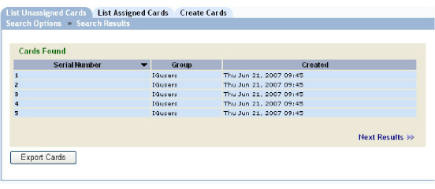

|
IdentityGuard Server 11.0 Administration Guide |
|
IdentityGuard Server 11.0 Administration Guide |
Use the following procedure to search for and export grid card information so that cards can be printed for your users.
You can set the default export format (XML or CSV) and the default grid card export directory using the Properties Editor. See Configuring grid card export properties.
To display and export grid card information
1. Log in to the Administration interface (see Logging in and out of the Administration interface).
2. Search for the grid cards to export. See Finding unassigned grid card information.
3. On the Search Results page click Export Cards to export the results of the unassigned grid card information to a file. (The file is saved in a location that was configured during the Entrust IdentityGuard server installation procedure.)

4. When prompted, click OK to confirm the export.
A summary page appears confirming the exported grid cards and providing the location of the export. The export operation may take several minutes.
To export and print grid cards
1. Log in to the Master user shell (see Using the Master user shell).
2. Enter the following command:
card list -export -csv <output_file>
where <output_file> is the file path and name.
3. Optional. Open the exported output file in Microsoft Excel to check the contents of the file.
4. Use the file to print to a card printer, or print labels to stick to blank cards.